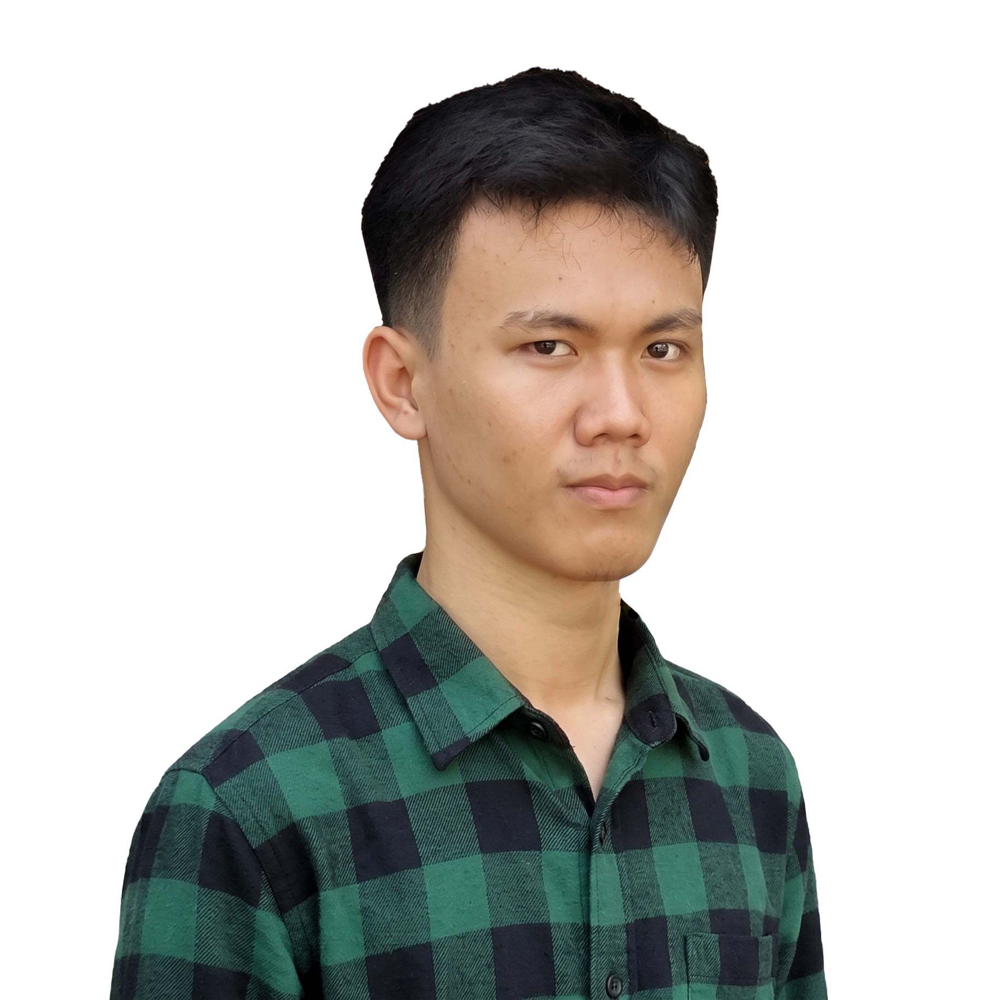

M. Agung Wibowo - Software Developer, IT Enthusiast, UI/UX Designer
Halo, saya Agung Wibowo, lulusan D4 Teknik Informatika Politeknik Negeri Malang dengan latar belakang D3 Teknik Komputer. Saya mengerjakan pengembangan web, infrastruktur jaringan, IoT, dan desain antarmuka.

Tentang Saya
Saya lulusan D4 Teknik Informatika Politeknik Negeri Malang dengan latar belakang D3 Teknik Komputer Politeknik Negeri Sriwijaya. Minat dan pengalaman saya mencakup pengembangan perangkat lunak, teknologi informasi, infrastruktur jaringan, Internet of Things (IoT), dan desain antarmuka digital.
Saya membangun aplikasi web dengan Laravel, PHP Native, dan Next.js, mengintegrasikan Network Attached Storage (NAS), dan merakit perangkat IoT dengan ESP32 dan ESP8266. Dua kali kerja praktik di PT Kereta Api Indonesia (Daop VII Madiun dan Divre III Palembang) memberi saya gambaran penerapan TI di lingkungan operasional perusahaan.
Di luar pemrograman, saya tertarik pada UI/UX, desain grafis, fotografi, dan multimedia. Saya pernah menjadi Core Team Mentor UI/UX di Google Developer Group on Campus Polsri dan Ketua Pelaksana Festival Multimedia dan Teknik Komputer 2022.
Keahlian
Proyek
Sepuluh proyek dari kampus, magang, aplikasi web berbasis peta, dan karya desain.
Pengalaman & Organisasi
Kerja Praktik
PT Kereta Api Indonesia, Daop VII Madiun
Kerja praktik di bagian Teknologi Informasi, berkaitan dengan infrastruktur dan sistem informasi perusahaan. Pada periode ini saya mengembangkan sistem manajemen file Laravel yang terintegrasi dengan Windows NAS melalui SMB/CIFS.
PT Kereta Api Indonesia, Divre III Palembang
Kerja praktik di bagian Sistem Informasi dan TI. Saya mengembangkan sistem informasi checklist perangkat IT dan LRT berbasis PHP Native, lengkap dengan pelaporan hasil pemeriksaan untuk manajer.